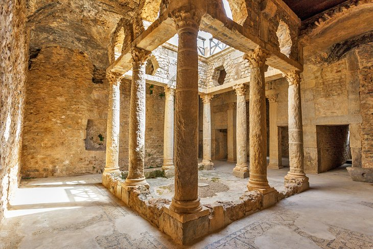

Site archéologique de Bulla Regia
Joyau archéologique unique, Bulla Regia est célèbre pour ses villas romaines souterraines, conçues pour échapper à la chaleur estivale. Ces demeures hypogées aux mosaïques exceptionnelles, dont celle de la chasse et de la pêche, témoignent de l'ingéniosité et du raffinement romains.